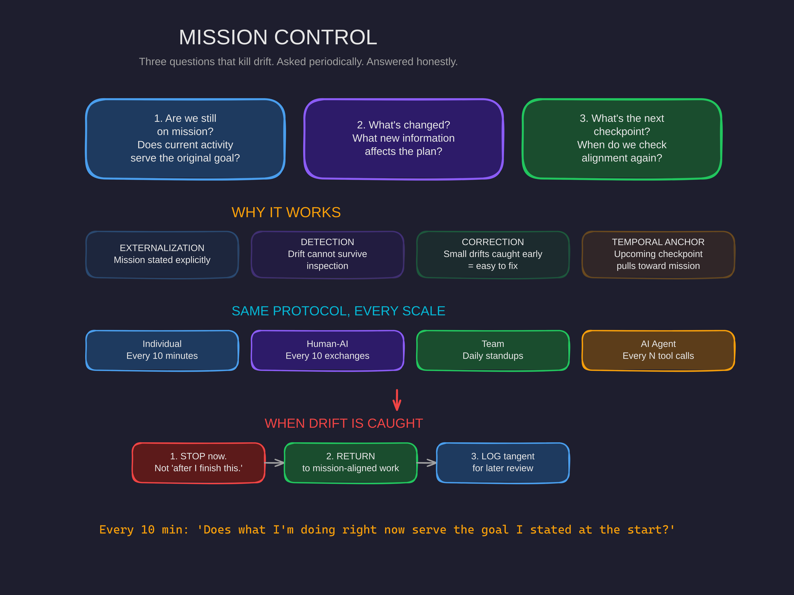

Mission Control: Three Questions That Kill Drift
You don't lose alignment in one dramatic moment. You lose it gradually, silently, while being extremely busy doing the wrong thing.

The Drift Problem
You start a work session with clear intentions. Build this feature. Ship this deliverable. Solve this problem. And for the first twenty minutes, you're locked in.
Then you notice a code smell. You refactor it. The refactor touches another file. You improve that too. Thirty minutes later you're deep in a rabbit hole that has nothing to do with the feature you sat down to build.
You were busy the entire time. Productively busy, even — every individual action was reasonable. But the session failed. Because nobody was checking whether the work still served the mission.
This is the drift problem. And it doesn't just happen to individuals. It happens to teams, to AI agents, to entire organizations. Any system without an alignment check will drift. The only question is how far.
The Missing Component
I was building an agent architecture using a framework called SOSEEH — which identifies four universal components of any system navigating complexity: Pilot, Vehicle, Mission Control, and Interaction Loops.
When I applied SOSEEH to my own operations, the diagnosis was instant:
"You're missing Mission Control. There's no coordination layer checking alignment. That's why drift is inevitable."
I had a pilot (me, making decisions). I had a vehicle (the tools, the codebase, the systems). I had interaction loops (feedback from testing, from users). But I had zero Mission Control — nothing periodically asking "is this activity actually serving the goal?"
SOSEEH told me that I needed Mission Control. It didn't tell me how to implement it.
So I experimented. And what actually worked was embarrassingly simple.
Three Questions. That's It.
Every N exchanges — or every 10 minutes, or every logical checkpoint — ask three questions:
1. Are we still on mission?
Does current activity serve the original goal?
2. What's changed?
What new information affects the plan?
3. What's the next checkpoint?
When do we check alignment again?
That's the entire protocol. Three questions. Asked periodically. Answered honestly.
The simplicity is the point. Complex protocols don't get followed. These three questions can be asked in 30 seconds. And those 30 seconds are the difference between a session that compounds and a session that wanders.
Why Something This Simple Works
The protocol works through four mechanisms:
Externalization
The mission is stated explicitly at each check-in. It's not in your head — where it drifts, morphs, and softens — but in front of you. Spoken out loud or written down. The moment you externalize the mission, you can compare your activity against it.
Detection
Drift cannot survive inspection. When you sincerely ask "are we still on mission?" the honest answer exposes divergence. You literally cannot drift unknowingly if you're periodically checking. The question is the detector.
Correction Windows
Small drifts are easy to correct. Large drifts require unwinding hours of work. The frequency of check-ins determines how large drifts can grow before detection. Check every 10 minutes and you catch 10-minute drifts. Check every 4 hours and you lose half a day.
Temporal Anchoring
"What's the next checkpoint?" keeps the future tethered. You know when inspection happens next. This creates accountability even when you're working alone. The upcoming checkpoint exerts gentle gravitational pull toward the mission.
The Honesty Problem
Here's where most people fail: they turn the check-in into a ritual instead of an inspection.
"Are we on mission?" "Yep." Next.
That's not Mission Control. That's a rubber stamp. A check-in that always approves is not checking anything.
The fix is requiring specific answers. Not "yes" but: "The mission is X. Current activity is Y. Y serves X because Z."
The specificity forces genuine inspection. If you can't articulate the connection between what you're doing and why you started — you just caught drift. That's the protocol working exactly as intended.
The uncomfortable truth: Mission Control's value comes from the times it catches drift. If it never catches anything, either you have superhuman focus or your check-ins are theater.
Same Protocol, Every Scale
The power of this protocol is that it scales without changing:
Individual Work
Every 10 minutes, self-check. "Am I building the feature or refactoring unrelated code?" Catch drift before it eats the session.
Human-AI Collaboration
Every 10 exchanges: "Are we still working on X?" When context feels off: "Let me restate what I'm trying to accomplish." Before major actions: "Does this serve the goal we set?"
Team Coordination
Daily standups ask the same three questions. Sprint retros ask them at a larger timescale. Quarterly reviews ask them at a strategic level. Same questions, different altitude.
AI Agent Systems
Every N tool calls: mission_control_check(). After workflow phases: phase_gate_check(). When uncertainty spikes: explicit alignment query. The agent that checks alignment is the agent that stays useful.
What Happens When You Catch Drift
Detection without correction is just observation. When you catch drift, the protocol is simple:
- Stop current activity. Not "after I finish this." Now.
- Return to mission-aligned work. The thing you sat down to do.
- Log the tangent for later. If it's genuinely valuable, it'll still be valuable tomorrow. If it's not valuable enough to survive a day, it wasn't valuable enough to derail today.
The default is return-to-mission. Exceptions require justification. Not the other way around.
A 10-minute drift corrected immediately costs 10 minutes. A 10-minute drift "finished later" costs 10 minutes plus however long "later" takes to arrive, plus the cognitive load of the open loop. Immediate correction is almost always cheaper.
The Minimum Viable Version
If everything else in this article fades, keep this:
Every 10 minutes, ask: "Does what I'm doing right now serve the goal I stated at the start?"
If yes, continue.
If no, stop and return.
That's Mission Control at its core. Everything else is elaboration.
See the Full Picture
Mission Control is one of the four components identified by SOSEEH. It connects to Seam Repair (what to do when check-ins reveal a break), Helming (the vision you get when layers complete), and the full system we build with clients.
If your AI systems drift off-task, your team keeps building the wrong thing, or your sessions end with "what did we actually accomplish?" — you're missing Mission Control. Three questions, asked regularly, answered honestly. We can help you install it.